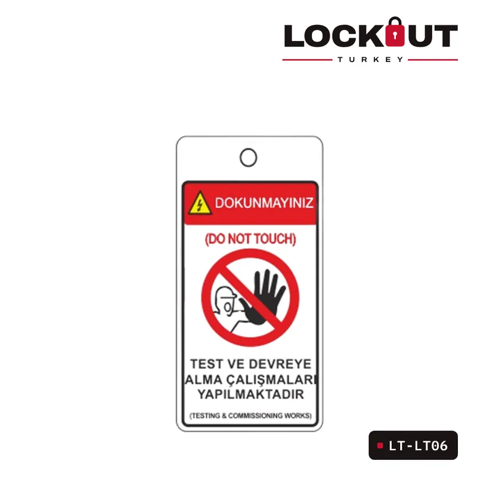
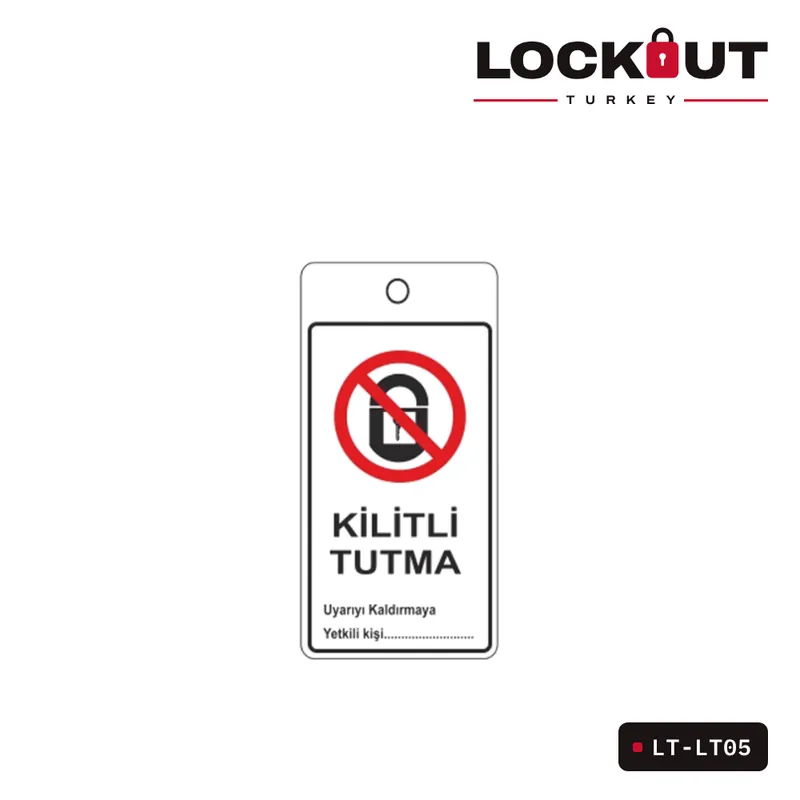
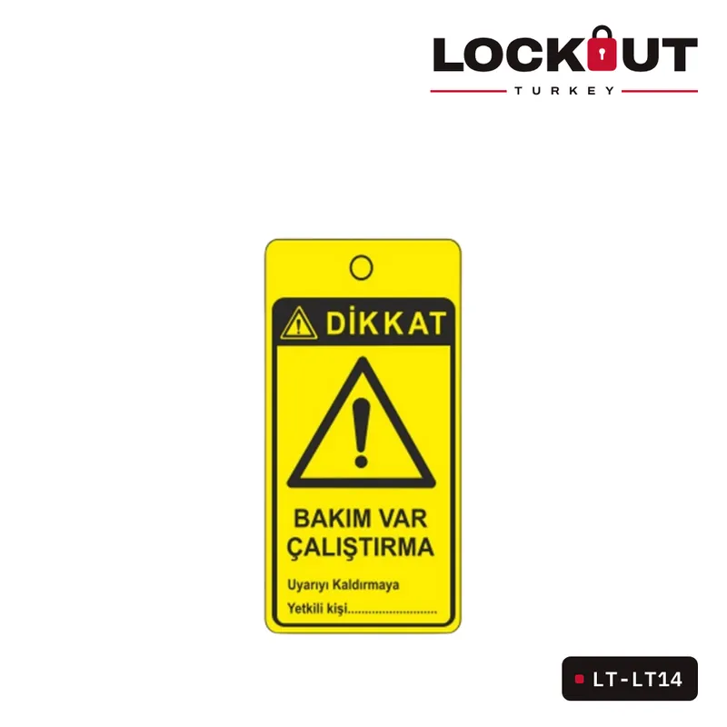

Etiket kilidin yerini tutar mı? EKED uyarı etiketlerinin doğru kullanımı
Kilit enerjiyi keser, etiket ise kimin, ne zaman ve neden kilitlediğini söyler. Etiket tek başına ne zaman yeterli değildir, üzerinde neler yazmalıdır?
Kilitleme ve etiketleme iki ayrı işi birlikte yapar. Kilit, enerji kaynağının fiziksel olarak açılmasını engeller. Etiket ise o noktada kimin çalıştığını ve neden kilitlendiğini herkese söyler. Biri olmadan diğeri eksik kalır.
Etiket tek başına yeterli mi?
Hayır. Etiket bir uyarıdır, engel değildir; birisi etiketi görmezden gelip şalteri kaldırabilir. Bu yüzden kilitlenebilen her enerji noktasında etiket, kilidin yanında kullanılır. OSHA 29 CFR 1910.147 de kilitlenebilen bir noktada yalnızca etiketle yetinilmesini ancak kilit kadar güvenlik sağladığı gösterilebiliyorsa kabul eder.
Etikette neler yazmalı?
- Kilidi takan kişinin adı ve departmanı
- Tarih ve saat
- Kilitleme nedeni ya da yapılan iş
- Gerekirse ulaşılabilecek telefon numarası
Kişisel kilitleme etiketi (LT-LT02-TR Kilitleme Bilgi Etiketi) bu alanları içerir ve kilitle birlikte asılır.
Farklı durumlar için farklı etiketler
Test ve devreye alma sırasında enerjinin geçici olarak verildiğini göstermek için ayrı bir etiket (LT-LT06 Test ve Devreye Alma EKED Uyarı Etiketi) kullanmak karışıklığı önler. Bakımın sürdüğünü vardiyaya duyurmak için askılı uyarı levhaları (LT-LT05 Kilitli Tutma Askılı Eked Uyarı Levhası, LT-LT14 Dikkat Bakım Var Çalıştırma Askılı Uyarı Etiketi) da iş görür.
Dayanıklılık
Sahada kullanılan etiketler yağ, nem ve sıcaklığa dayanıklı olmalı, yazılanlar silinmemelidir. Yırtılan ya da okunmayan bir etiket hiç olmamış gibidir.
Doğru ürünü birlikte seçelimKilitleyeceğiniz noktanın fotoğrafını gönderin, uygun ekipmanı bildirelim.
WhatsApp’tan yazın
Yazıda geçen ürünler
İlgili ürünler



Blog
Tüm yazılarDiğer yazılar

Emniyet asma kilidi nasıl seçilir? Çene malzemesi, boy ve anahtar sistemi
Çelik mi plastik çene mi, 38 mm mi 76 mm mi, farklı anahtar mı master anahtar mı? Kişisel LOTO kilidini seçerken bakılacak dört nokta.
Devamını oku →
Minyatür devre kesici kilitleri: POS, PIS, POW ve TBLO farkı
Sigortalar için kilit seçerken karşılaşılan POS, PIS, POW ve TBLO kısaltmaları ne anlama geliyor, hangi sigortaya hangisi uyar?
Devamını oku →
Grup kilitleme nasıl yapılır? Grup kilit kutusuyla adım adım
Çok kişinin çok noktada çalıştığı bakımlarda her çalışanın her noktaya kilit takması pratik değildir. Grup kilit kutusu bu işi nasıl kolaylaştırır?
Devamını oku →